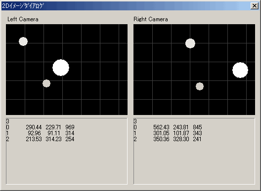

| ２Ｄイメージダイアログ |
|

２台のカメラが捕らえた映像を再合成して表示します。カメラからの情報を元に輝度の高いエリアを円で再合成しており、現画像とは異なります。
現画像の確認にはビデオ出力映像を使用してください。３Ｄイメージの表示が安定しない場合は、外乱がある可能性があります。この映像で確認してみてください。
動作環境・条件を参照してください。
|
|
Copyright (C) 2001 CyVerse
Corp.
|